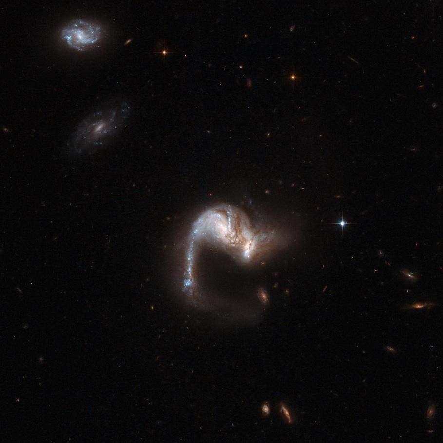
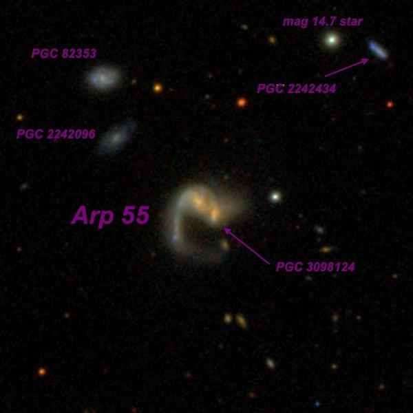
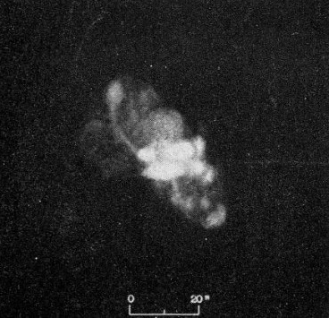

Arp 55 = VV 155 The Grasshopper
- Name: Arp 55 = VV 155 = UGC 4881 = MCG +08-17-065 = CGCG 238-025 = PGC 26132 = The Grasshopper
- Constellation: Interacting collision pair
- RA: 09h 15m 55.1s
- Dec: +44° 19’ 55”
- Size: 0.9'x0.8'
- Mag: 14.0V, 14.9B
- Surface Brightness: 13.5 mag/sq. arcmin
This remarkable interacting pair was first cataloged by Vorontsov-Velyaminov in his 1959 "Atlas and Catalog of Interacting Galaxies" and given the nickname "Grasshopper".
Here's the HST image from 2008

The caption reads "UGC 4881, known as the "The Grasshopper," is a stunning system consisting of two colliding galaxies. It has a bright curly tail containing a remarkable number of star clusters. The galaxies are thought to be halfway through a merger; the cores of the parent galaxies are still clearly separated, but their disks are overlapping. A supernova exploded in this system in 1999 and astronomers believe that a vigorous burst of star formation may have just started. This notable object is located in the constellation of Lynx, some 500 million light-years away from Earth."
My first view was with my 18-inch Starmaster in 2010:
Arp 55 is faint, fairly small, slightly elongated E-W, 0.5'x0.4'. I occasionally noticed an extension (companion galaxy) or knot at the west edge. A couple of times it appeared resolved from the main glow as an extremely faint and small glow.
Needless to say, Jimi's scope provided a bit more detail in 2013:
Arp 55 = "Grasshopper" is a merger of two galaxies with a single tidal tail on the east side. At 488x it appeared bright, moderately large, a very unusual appearance with a mottled main body elongated 2:1 SW-NE, ~30"x15". On the SW end is Arp 55S = PGC 3098124, a nearly stellar knot that is the nucleus of a merging, interacting companion. A faint, thin "arm" or "tail" is attached at the NE end and extends ~20"x5" straight south. The tail brightens slightly (perhaps an HII knot or another merged galaxy) at the south end. This knot has the designation SDSS J091556.72+441937.5. On the SDSS the tail curves sharply west on the south end, but this extension was not seen. A mag 16.2 star is 45" west.
SDSS J091559.93+442034.6 = PGC 2242096 lies 0.9' NE and appeared as a very faint (V = 17.1), very low surface brightness patch, 15" diameter. Arp called this object a "filament" of Arp 55 in his 1967 paper "Peculiar Galaxies and Radio Sources" (ApJ, 148, 321). PGC 82353 is 1.4' NE and appeared fairly faint, fairly small, slightly elongated E-W, 20"x15". PGC 2242434 lies 2.3' NW, just 27" W of a mag 14.7 star. It appeared fairly faint, fairly small, slightly elongated E-W, 20"x15". These three galaxies have identical redshifts as Arp 55, so are part of a small group.
Here's a labeled SDSS image of these companion galaxies --

“GIVE IT A GO AND LET US KNOW”
GOOD LUCK AND GREAT VIEWING!
Steve's follow-up — February 26th, 2015, 04:48 PM
The "Grasshopper" nickname (as well as quite a few others) is from Vorontsov-Velyaminov. Here's the page that has VV 151 in Part II of the V-V Atlas. At least in this image (based on the POSS I), it does look like a grasshopper!
